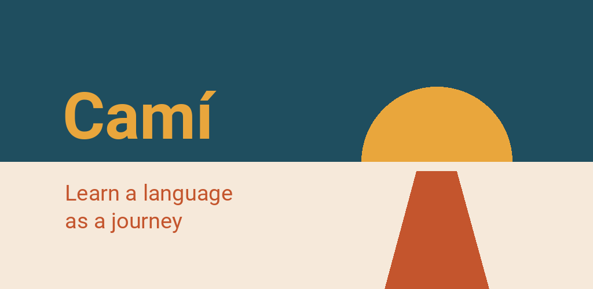

Privacy policy
Camí · Last updated: 8 October 2026
This is a translation. In case of doubt, the German version prevails.
In short
Camí collects nothing about you. There is no account, no advertising and no usage statistics about you — we only count daily totals from the leaderboard and "Feedback", without names. Your progress stays on your device. For the pronunciation exercises the app may use the microphone — the recording is analysed on the device and never leaves it. Camí only goes online for three things, and you trigger all three yourself: when you download the voice pack for the pronunciation exercises, when you take part in the leaderboard and when you send us something via “Feedback”. To find out whether there is an update, Camí asks the Play Store app on your phone. Apart from that, the app fetches nothing.
Controller
Finn Cardona SantaféPfaffenstraße 22
23552 Lübeck
Germany
Email: appentwicklung@mein.gmx
On your device
What is stored
Your progress, your goals and the settings are kept in the app's storage on your device. This includes, for example: completed lessons, the day you finished a stage, collected rewards, the boxes of your flashcards, daily and weekly goal, points collected, your streak, the result of the placement test, the languages you chose under “I speak” and “I'm learning”, and the display settings. If you take part in the leaderboard, your random number with its key (like a password) and the last list fetched are added (see “Leaderboard”).
No name, no email address, no device identifier and no location is collected. Storing this on your device is strictly necessary for the app; it requires no consent (Section 25(2) no. 2 of the German TDDDG).
When reading aloud
When you have a word or a sentence read aloud, Camí passes the text to your device's speech output and only chooses voices there that are marked as offline. Which speech output your device uses and how it handles the texts is decided by its manufacturer (for example Google or Samsung); its terms apply.
When speaking
In the pronunciation exercises the microphone listens while you speak. Recognition happens only on the device — the recording is analysed immediately, stored nowhere and not sent. So that you can listen to it, your last recording stays in the working memory until you speak again or leave the exercise. Listening uses the voice pack (Vosk) that you download beforehand (see “Voice pack for the pronunciation exercises”); after that it stays on your device and works without a network.
Before Camí requests the microphone, it asks you, and you can decline. You can also switch off listening later for each language, or switch off the pronunciation exercises temporarily or permanently (Settings → Pronunciation). The course stays complete either way: without listening, you repeat the sentences without anything being checked. Where Camí could listen, you then get 2 points (XP) less per speaking exercise — this only affects the points in the app and in the leaderboard, not the course.
Backup
Android can include the data of installed apps in the device backup of your Google account. Whether that happens is a setting of your phone, not of the app; Google's privacy terms apply to the backup.
Independently of that, you can export your progress as a file yourself (Settings → Progress → Export progress) and keep it wherever you like. What happens to this file is entirely up to you. If you take part in the leaderboard, your random number and its key are in it — whoever passes the file on passes on their place in the leaderboard.
Deleting
In the app: Settings → Progress → Reset, optionally for one language. Uninstalling the app deletes all its data on the device; a device backup or an exported file is not affected. Your leaderboard entry is deleted by the switch that turns the leaderboard off; if you uninstall first, your entry expires after 60 days.
Connections to the internet
Camí only connects when you trigger it. Courses, images and maps are included in the app; your recordings and your progress never leave the device. These are all the connections today:
Voice pack for the pronunciation exercises
When: when you switch on listening in a speaking exercise or in the settings and the voice pack for that language is not yet on your device — once per language; the app tells you the size beforehand (currently around 40 to 50 MB).
What is sent: the usual connection data of a download — the address of the file, your IP address and an identifier of the software used. Nothing about you, your progress or your recordings.
Where to: to alphacephei.com, the server of Alpha Cephei Inc., which publishes the recognition software Vosk; the server is currently located in Germany. Your IP address is received there, not by us — we never get it.
Legal basis: The download happens at your request, so that the exercise does what you switched on (Art. 6(1)(b) GDPR).
Switching it off: If you don't download the pack, this connection doesn't exist. You can delete a downloaded pack from your device under Settings → Pronunciation.
Leaderboard (optional)
You miss nothing without it. It is off until you switch it on and agree; you may take part from the age of 16. Then our server receives:
- your nickname,
- a random number that your device picks itself, with a key by which the server recognises you (it only stores the key's fingerprint),
- your points per exercise with the day,
- with the points, the language you learn and the one Camí explains in, and the app version — only for the daily totals (see "What every request carries"),
- and, as with any connection, your IP address.
What for: so that you appear in a leaderboard with others. Everyone taking part sees nicknames and points — so don't use your real name. We remove an offensive nickname; your points stay. Nobody else gets the data. The only analysis is the total across everyone: how many take part and how many points come together per day, type of exercise, language and app version — without nicknames and without random numbers.
Where to: to our own server. We rent the machine from IONOS SE (data centre in Spain, i.e. in the EU); IONOS is our data processor and bound by our instructions.
Legal basis is your consent (Art. 6(1)(a) GDPR). You withdraw it by switching the leaderboard off; what happened until then remains lawful (Art. 7(3) GDPR).
How long: If you switch the leaderboard off, your entry is deleted — if you're offline just then, as soon as you're back online. If nothing comes from you for 60 days, it is deleted automatically. A deleted entry remains in the server's backup copies for at most 14 days.
Feedback
With “Feedback” at the top of the screen you send us a bug or a wish. Nothing is sent until you tap “Send”, and only what the window lists: your text and the reason; for an exercise, its place in the course and the solution; your learning and explanation language, the app version and the system — and a screenshot, unless you untick it. In addition, as with any connection, your IP address; it is in the web server's log, not in the report itself.
The report carries no name and no identifier. That is why we can't reply to you, and we can't look it up later either — so don't put anything personal in it.
Where to: to the same server as the leaderboard (IONOS SE, see there).
Legal basis is our legitimate interest in fixing bugs that you send us yourself (Art. 6(1)(f) GDPR). How long: on our server until we have read it, at most 90 days, plus another 14 days in the backup copies. After that, without text or screenshot, we keep only the day it arrived, its kind, the two languages, the app version and what became of it — so we can count how many reports come in and how quickly we deal with them.
What every request carries
Whatever Camí sends to our server — leaderboard points or Feedback — carries the language you learn and the one Camí explains in, the app version and the kind of installation (from the Play Store or a test build). They are only counted in daily totals, such as "340 points today for learning Catalan in German": for the leaderboard they are never stored with your entry, for Feedback only in the report, which carries no name anyway. The server also counts how many requests arrive per hour and of which kind (such as "report points" or "view the list") — without address and without number.
What for: so that we can see what is being learned and how busy the server is. The totals are anonymous; what is sent falls under the legal basis of the leaderboard or of Feedback (see there).
The web server's log
For the leaderboard and “Feedback”, the web server in front of our service writes every request with your IP address to its log. This serves secure operation — for example to detect attacks — and is our legitimate interest (Art. 6(1)(f) GDPR). The log is deleted after 7 days. Before that, without keeping any address, we count from it how many different connections came per day, how many of them had already come in the days before, how many requests one sent and which country they came from (looked up on our own server); only these totals remain (statistical purposes, Art. 5(1)(b) GDPR). The service itself stores no IP address.
Update notice via the Play Store
To find out whether there is a new version of Camí, the app asks the Play Store app on your phone (Google's “in-app updates”). Camí itself makes no connection for this and gives the Play Store nothing about you. The Play Store sends Google its own information, such as device data and the app version; the Google Play Terms of Service and Google's privacy policy apply to that.
Beyond this, there is no disclosure to third parties, no advertising networks and no analytics services.
Your rights
What is on your device belongs to you and can be viewed and deleted there at any time (see “What is stored” and “Deleting”). For the data on our server you have the right to
- access (Art. 15 GDPR) and erasure (Art. 17) — for the leaderboard, the app gives you both itself: Settings → “What is stored about you” and the leaderboard switch,
- rectification (Art. 16), restriction (Art. 18) and data portability (Art. 20),
- object to processing based on our legitimate interest (Art. 21),
- withdraw your consent with effect for the future (Art. 7(3)) — for the leaderboard: switch it off.
To do so, write to us at the address above. However, we cannot match a report from “Feedback” to you, because it carries no identifier (Art. 11 GDPR).
You also have the right to lodge a complaint with a data protection supervisory authority (Art. 77 GDPR), for example in your country or where you live. The authority responsible for us is the Unabhängiges Landeszentrum für Datenschutz Schleswig-Holstein (the data protection authority of the German state of Schleswig-Holstein), Holstenstraße 98, 24103 Kiel, Germany, www.datenschutzzentrum.de.
Changes
If anything changes in how data is handled, this page will be updated and the date at the top changed.